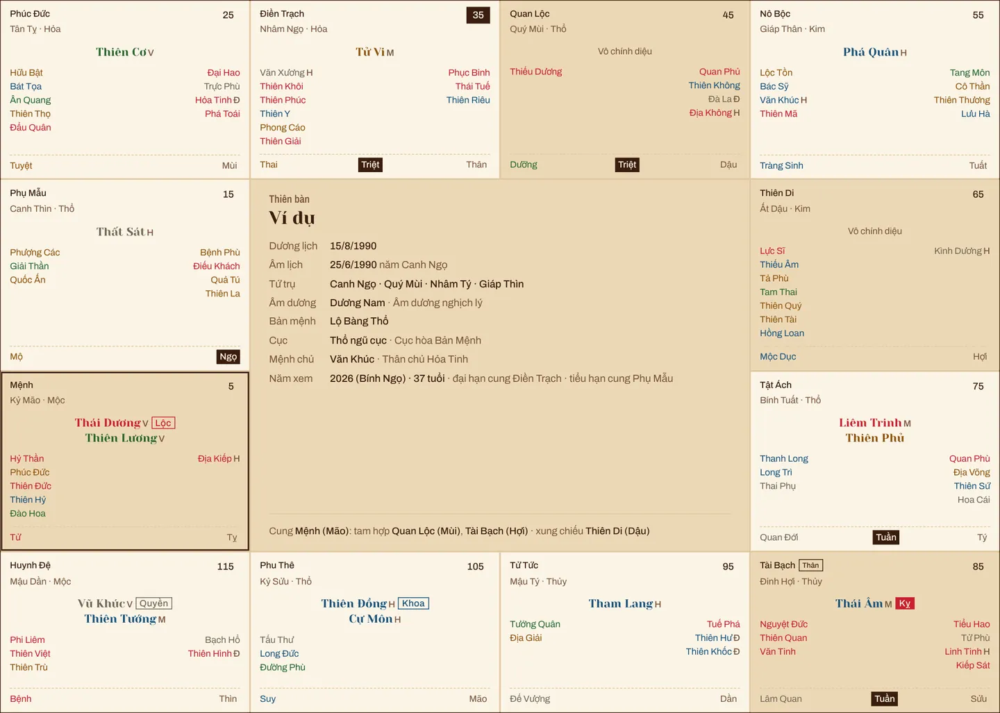
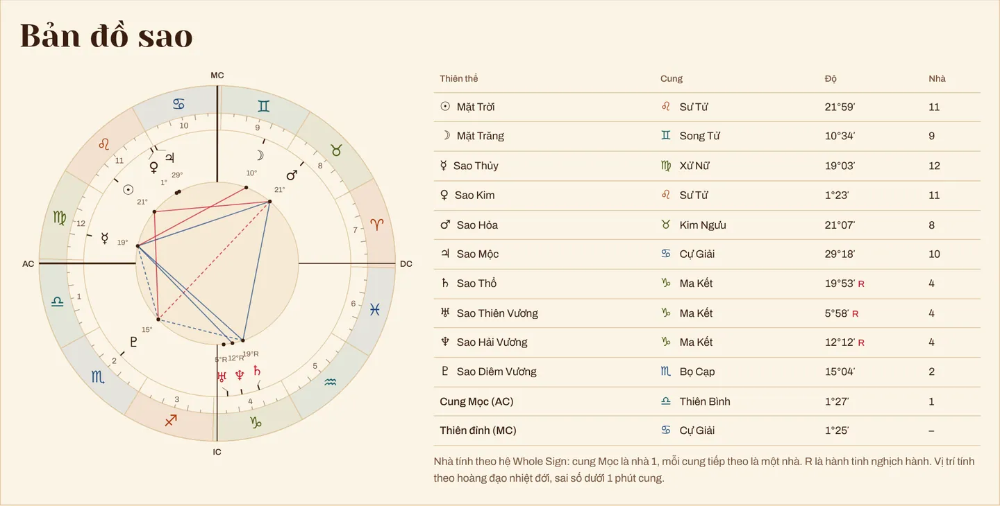
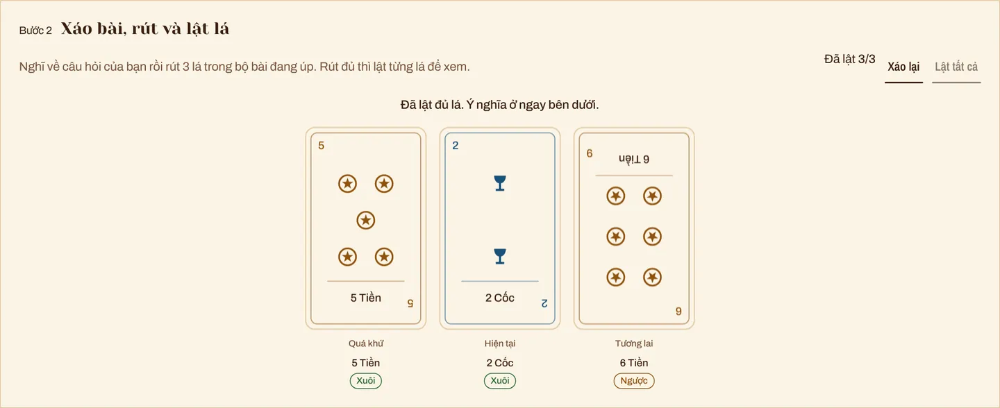
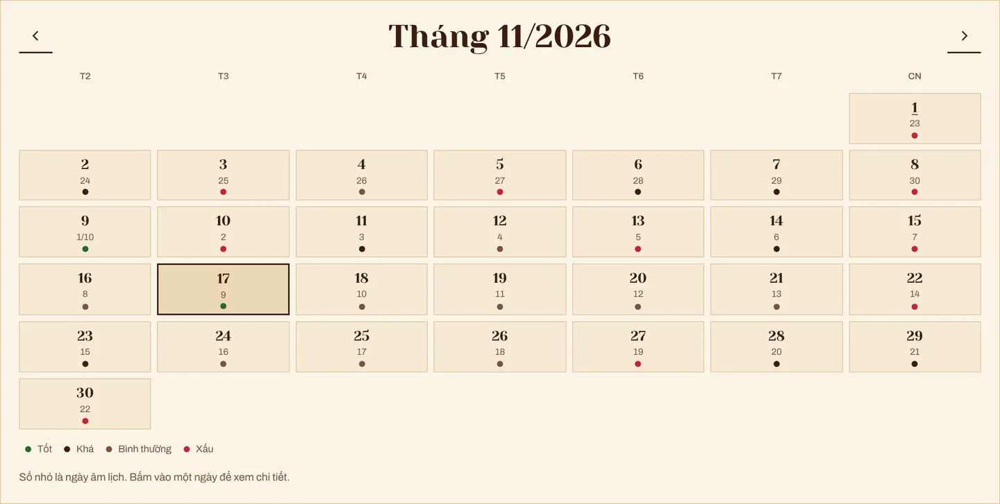

Một ngày sinh, ba góc nhìn
Ba hệ cùng đọc may mắn, tình cảm, sự nghiệp của bạn.
Dự đoán của bạn
Cách tính: mỗi hệ cho điểm từ 0% đến 100%, 50% là mức trung bình. Tử vi lấy 40% từ nền lá số (Tài Bạch và Phúc Đức cho may mắn, Phu Thê cho tình cảm, Quan Lộc cho sự nghiệp) và 60% từ vận của tuổi trong ngày, tháng âm lịch, năm âm lịch. Cung hoàng đạo dựa trên vị trí thật của các hành tinh so với cung Mặt Trời của bạn. Số chủ đạo dựa trên ngày, tháng, năm cá nhân và thiên hướng của con số. Điểm chung là trung bình ba hệ. Nội dung chỉ để tham khảo.
Bạn mang đến điều gì?
Một ngày sinh, một ngày bất kỳ hay một câu hỏi. Mỗi thứ có công cụ đọc riêng.
Ngày giờ sinh
- Dự đoán tổng hợpmay mắn, tình cảm, sự nghiệp theo ngày, tháng, năm
- Lập lá số tử vi12 cung, chính tinh, đại hạn và tiểu hạn
- Tử vi 12 con giápvận theo tuổi, giờ hoàng đạo
- Cung hoàng đạotính cách, độ tương hợp, bản đồ sao
- Số chủ đạobiểu đồ ngày sinh, năm cá nhân, bốn đỉnh cao
Một ngày
- Xem ngày tốt xấuhoàng đạo, trực, sao, giờ tốt, chọn ngày theo việc
Một câu hỏi
- Xem bài Tarotý nghĩa xuôi, ngược của từng lá theo vị trí
Bốn màn hình thật

Lá số 12 cung đầy đủ kèm luận giải từng cung: Mệnh, Tài Bạch, Quan Lộc, Phu Thê và các cung còn lại.
Lập lá số
Vị trí 10 hành tinh lúc bạn sinh ra, cung Mọc, cung Mặt Trăng và các góc chiếu chính.
Vẽ bản đồ sao
Tự chọn lá từ bộ 78 lá đã xáo, lật từng lá và đọc ý nghĩa xuôi ngược cho từng vị trí.
Rút bài
Lịch âm, ngày hoàng đạo, trực, sao, giờ tốt và chọn ngày cho cưới hỏi, khai trương, động thổ.
Xem ngày
Ba hệ, ba mặt, ba mốc
- Ba hệ
- tử vi phái Việt, chiêm tinh phương Tây, thần số học
- Ba mặt
- may mắn, tình cảm, sự nghiệp
- Ba mốc
- hôm nay, tháng này, năm nay
Mỗi hệ cho một điểm riêng; khi cả ba cùng thuận hoặc cùng nghịch, tín hiệu càng rõ ràng.
Bài viết mới
Tất cả bài viếtTử vi đẩu số là gì?
Lá số gồm những gì, vì sao có 12 cung và hơn 100 sao, phái Việt khác sách Trung Hoa ở đâu.
12 cung và tam phương tứ chính
Bắt đầu từ cung Mệnh, xem cùng tam hợp và xung chiếu, hiểu độ sáng của sao và cung Vô chính diệu.
Đại hạn và tiểu hạn tính thế nào?
Mỗi cung giữ 10 năm bắt đầu từ số cục, chiều đi theo âm dương nam nữ, và tiểu hạn đổi cung mỗi năm.